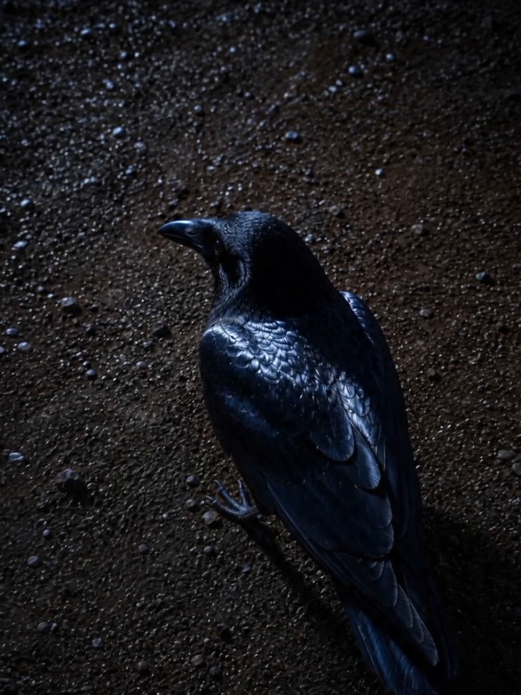
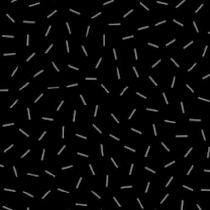
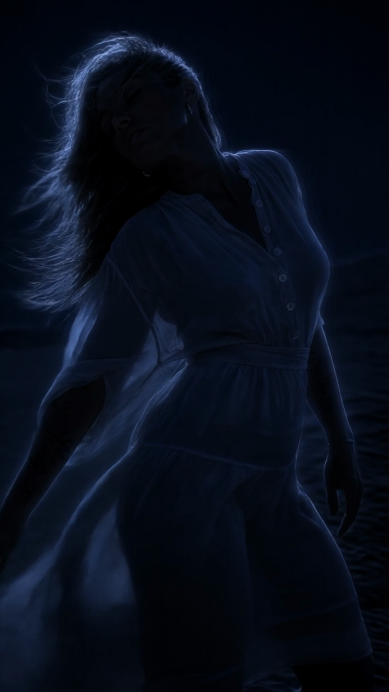
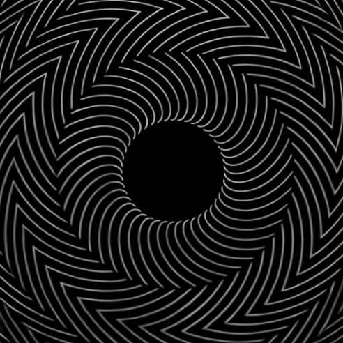
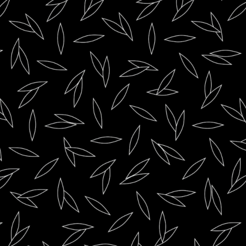

Spiralbound
Reveal the pattern of your world
“Are you bound to the spiral
running through the river?”



APOKALIS

Seven music videos / 01—07
Reveal the pattern of your world
“Are you bound to the spiral
running through the river?”

3 × 3 × 3



Move your body as you will

Sababa means All Good! Sababa


Traum means Dream: A story without an end



You Remember


kinuginu tsuguru asa-suzume
The morning sparrow announcing the lovers’ goodbye
